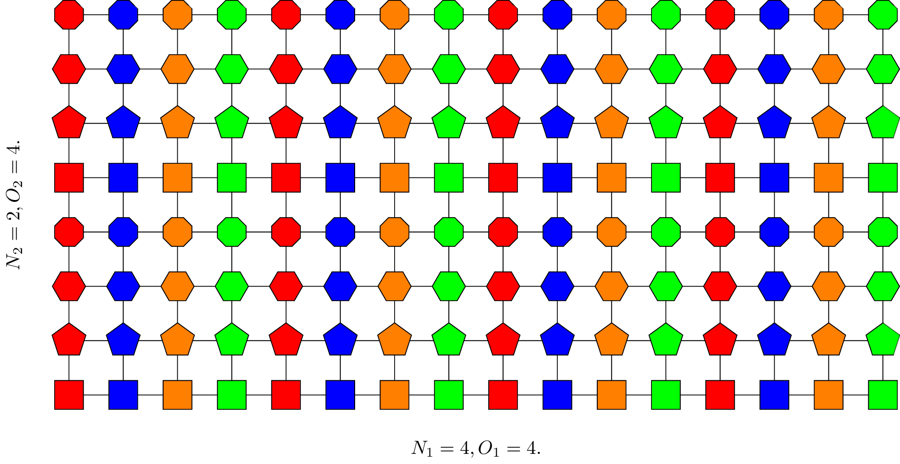

NR - Downlink Codebook
Table of Contents
In NR release 15, there are roughly two types of codebooks for spatial-domain CSI acquisition, termed type I and type II, respectively. The former is comprised of a finite set of vectors or matrices, as the same as the codebook in LTE systems. While for the type II codebook, each precoding vector is represented as a linear weighted sum of an incomplete orthogonal basis vectors. Further, frequency-domain compression is introduced in NR release 16 for enhancement, which is expected to remarkably reduce the feedback overhead. Note that this section aims to reveal the rationale behind the codebook design, in lieu of covering everything detail related in the specifications.
Without loss of generality, Figure 1 shows an oversampled 2D-DFT beams, with \(N_1 = 4\), \(N_2 = 2\), \(O_1 = O_2 = 4\). Different oversampling factors are distinguished by colors and shapes in the two dimensions respectively.

Figure 1: An example oversampled 2D-DFT beams
According to codebookType, PMI selection and feedback is performed within the corresponding codebook.
- For type I single-panel codebook, codebookType = typeI-SinglePanel.
- For type I multi-panel codebook, codebookType = typeI-MultiPanel.
- For type II codebook, codebookType = typeII.
- For type II port selection codebook, codebookType = typeII-PortSelection.
- For enhanced type II codebook, codebookType = typeIIr16.
- For enhanced type II port selection codebook, codebookType = typeIIr16-PortSelection.
For clear description, following denotation conventions are adopted throughout the document. Scalars are denoted by plain letters. Vectors and matrices are represented by boldfaced lowercase and uppercase letters, respectively. \(\otimes\) is the operator of Kronecker product. \((\cdot)^H\) and \(\text{Tr}(\cdot)\) return the Hermitian and trace of a matrix, respectively. \(\mathbf{I}_n\) stands for the identify matrix of dimension \(n \times n, n \in \mathbb{Z}^+\), where \(\mathbb{Z}^+\) is the set of positive integers. \(\mathbb{C}^{M \times N}\) is the space of complex-valued matrix of dimension \(m \times n, m, n \in \mathbb{Z}^+\). A set is denoted by a curly uppercase letter, and operator \(|\cdot|\) gets its cardinality. Particularly, \(\mathcal{F}_{n_1 \times n_2}^{o_1 \times o_2}\) is the set comprising 2-dimension (2D) DFT vectors of dimension \(n_1 \times n_2\) oversampled by \(o_1 \times o_2\), \(n_i, o_i \in \mathbb{Z}^+\), \(i = 1, 2\). Clearly, it is a subset of \(\mathbb{C}^{n_1 n_2 \times 1}\), i.e., \(\mathcal{F}_{n_1 \times n_2}^{o_1 \times o_2} \subset \mathbb{C}^{n_1 n_2 \times 1}\), \(|\mathcal{F}_{n_1 \times n_2}^{o_1 \times o_2}| = n_1 o_1 n_2 o_2\). \(C_n^m\) gives the number of candidates of choosing \(m\) from \(n\), \(m, n \in \mathbb{Z}^+\), \(m \le n\). Additionally, radio resource control (RRC) parameters are colored by blue.
Following symbols are defined.
- \(N_i\) is the port number in \(i\) th dimension, \(i = 1, 2\), \(N_1 \ge N_2\).
- \(O_i\) is the oversampling factor in \(i\) th dimension, \(O_i = \begin{cases} 1, & N_i = 1 \\ 4, & N_i > 1 \end{cases}\), \(i = 1, 2\).
- \(P_{\text{CSI-RS}} = 2N_1N_2\) is the number of CSI-RS port.
Type I Single-Panel Codebook
Generally, a precoder can be written as
\begin{align} \mathbf{W} = \mathbf{W}_1 \mathbf{W}_{2}. \label{eq:w} \end{align}\(\mathbf{W}_1\)
The \(\mathbf{W}_1\) in \eqref{eq:w} can be further expressed as
\begin{align*} \mathbf{W}_1 &= \begin{bmatrix} \mathbf{B} & \\ & \mathbf{B} \end{bmatrix} \\ &= \mathbf{I}_2 \otimes \mathbf{B}, \end{align*}where \(\mathbf{B} \triangleq \begin{bmatrix} \mathbf{b}_1 & \mathbf{b}_2 & \cdots & \mathbf{b}_L \end{bmatrix} \in \mathbb{C}^{N_1N_2 \times L}\) are the candidate beams/vectors over the whole bandwidth.
- For rank 1 or 2, \(L\) can be configured to 1 or 4 by CodebookMode. Otherwise, \(L\) is fixed to 1.
- Component columns of \(\mathbf{B}\) are spatially correlated.
- There are two structures for \(\mathbf{B}\).
- \(\mathbf{b}_i \in \mathcal{F}_{N_1 \times N_2}^{O_1 \times O_2}\), \(i = 1, \ldots, L\).
- If \(P_{\text{CSI-RS}} \ge 16\) and rank equals 3 or 4, each column can be expressed as
\(\mathbf{W}_2\)
For the sake of inter-layer interference avoidance, the precoding vectors for multi-rank transmission should be orthogonal. To this end, following 3 methods have been utilized, and the methods for each rank value can be summarized in Table 1.
- Orthogonal vectors, e.g., DFT beams.
- Opposite co-phasing between the both polarizations.
- Use shorter DFT vectors instead and apply a length-2 orthogonal cover code (OCC) on them. For a vector as in \eqref{eq:occ}, \(\forall \theta, |\theta|=1, \mathbf{b}_i(\theta) \perp \mathbf{b}_i(-\theta)\), \(i = 1, \ldots, L\).
| Rank | Methods |
|---|---|
| 2 (\(L = 1\)) | 1 or 2 beam(s) in \(\mathcal{F}_{N_1 \times N_2}^{O_1 \times O_2}\) + co-phasing |
| 2 (\(L = 4\)) | 2 beams in \(\mathcal{F}_{N_1 \times N_2}^{O_1 \times O_2}\) + co-phasing |
| 3, 4 (\(P_{\text{CSI-RS}} < 16\)) | 2 beams in \(\mathcal{F}_{N_1 \times N_2}^{O_1 \times O_2}\) + co-phasing |
| 3, 4 (\(P_{\text{CSI-RS}} \ge 16\)) | 1 beam in \(\mathcal{F}_{N_1/2 \times N_2}^{O_1 \times O_2}\) + 2x-OCC + co-phasing |
| 5, 6 | 3 beams in \(\mathcal{F}_{N_1 \times N_2}^{O_1 \times O_2}\) + co-phasing |
| 7, 8 | 4 beams in \(\mathcal{F}_{N_1 \times N_2}^{O_1 \times O_2}\) + co-phasing |
Restrictions
In the CSI feedback, PMI selection can be limited within a subset of the entire codebook, a.k.a. codebook subset restriction.
In 2-port case, i.e., nrOfAntennaPorts = two, the restriction is indicated by twoTX-CodebookSubsetRestriction, which is essentially a length-6 bitmap. The 4 least significant bits indicate the availability of the 4 codewords for rank-1 transmission, and the 2 most significant bits correspond to the 2 codewords for rank-2 transmission.
For more than two ports scenarioes, the codebook subset restriction is performed at the stage of \(\mathbf{W}_1\) selection. It is indicated by n1-n2, a length-\(N_1O_1N_2O_2\) bitmap.
Besides codebook subset restriction, rank adaptation is also restricted, indicated by typeI-SinglePanel-ri-Restriction. The parameter is a length-8 bitmap, with each bit indicating the availability of a rank candidate.
Type II Codebook
Principle
Different from type I codebook, in type II codebook based PMI selection, each precoding vector, corresponding to a layer, is explicitly expressed as a weighted sum of an incomplete orthogonal basis vectors. E.g., the precoding vector for \(l\) th layer on \(s\) th subband can be written as
\begin{align*} \mathbf{w}_{l,s} = \begin{bmatrix} \mathbf{B} & \\ & \mathbf{B} \end{bmatrix} \begin{bmatrix} \mathbf{c}_{l,s,1} \\ \mathbf{c}_{l,s,2} \end{bmatrix}, \quad l = 1, 2; s = 1, 2, \ldots, S; \end{align*}where
- \(S\) is the number of subbands.
- \(\mathbf{B} \triangleq \begin{bmatrix} \mathbf{b}_1 & \mathbf{b}_2 & \cdots & \mathbf{b}_L \end{bmatrix}\) is the orthogonal basis, \(\mathbf{b}_m \in \mathbb{C}^{N_1N_2 \times 1}\), \(m = 1, 2, \ldots, L\). In 4-port, i.e., \(P_{\text{CSI-RS}} = 4\) case, \(L\) is fixed to 2; Otherwise, \(L\) can be configured to 2, 3, or 4 by numberOfBeams. The basis vectors are essentially a subset of a complete DFT basis vectors.
- The complete basis is indicated by a pair of oversampling factors, i.e., \(i_{1,1} = \begin{bmatrix} q_1 & q_2 \end{bmatrix}\), \(q_1 \in \{0, 1, \ldots, O_1 - 1\}\), \(q_2 \in \{0, 1, \ldots, O_2 - 1\}\).
- The selected subset out of the basis is indicated by \(i_{1, 2}\) out of \(C_{N_1N_2}^L\) candidates.
- \(\mathbf{c}_{l,s,r} = \begin{bmatrix} c_{l,s,r,1} \\ c_{l,s,r,2} \\ \vdots \\ c_{l,s,r,L} \end{bmatrix} \in \mathbb{C}^{L\times 1}, r = 1, 2\). \(c_{l,s,r,m}\) is the corresponding complex-valued weight of \(\mathbf{b}_m\), \(m = 1, 2, \ldots, L\). Each weight can be further defactorized into following 3 parts.
Wideband amplitude \(\mathbf{p}_{l,r}^{(1)} \triangleq \begin{bmatrix} p_{l,1,r}^{(1)} & p_{l,2,r}^{(1)} & \cdots & p_{l,L,r}^{(1)} \end{bmatrix} \in \mathbb{C}^{1 \times L}\), \(r=1,2\), indicated by \(i_{1,4,l}\). All the wideband amplitudes are normalized to the strongest weights/coefficients, whose index is indicated by \(i_{1,3,l} = L r_{l,\max} + m_{l,\max}\), where
\begin{align*} (m_{l,\max}, r_{l,\max}) = \arg\max_{\substack{m=1,2,\ldots,L;\\r=1,2.}} p_{l,m,r}^{(1)}. \end{align*}- Subband amplitude \(\mathbf{p}_{l,r}^{(2)} \triangleq \begin{bmatrix} p_{l,1,r}^{(2)} & p_{l,2,r}^{(2)} & \cdots & p_{l,L,r}^{(2)} \end{bmatrix} \in \mathbb{C}^{1 \times L}\), \(r=1,2\), indicated by \(i_{2,2,l}\).
- Subband phase \(\varphi_l\) indicated by \(i_{2,1,l}\).
Particularly, for the strongest weight/coefficient, its amplitudes, irrespective of wideband or subband, are considered equal to the highest quantization level by default; Further its phase is identified as the reference for other coefficients. Therefore, the amplitudes and phase corresponding to the strongest coefficients are not reported.
Granularity and Payload for Feedback
The granularities of the information discussed above can be listed in Table 2.
| Entry | Granularity |
|---|---|
| Orthogonal basis vectors (\(i_{1,1}\) and \(i_{1,2}\)) | Common to all layers/polarizations/subbands |
| The index of the strongest coefficient (\(i_{1,3,l}\)) | Per-layer |
| Wideband amplitude (\(i_{1,4,l}\)) | Per-layer/polarization |
| Subband amplitude (\(i_{2,2,l}\)) | Per-layer/polarization/subband |
| Subband phase (\(i_{2,1,l}\)) | Per-layer/polarization/subband |
The final PMI payload for feedback is comprised of two parts,
\begin{align*} i_1 & = \begin{bmatrix} i_{1,1} & i_{1,2} & i_{1,3,l} & i_{1,4,l} \end{bmatrix}; \\ i_2 &= \begin{cases} \begin{bmatrix} i_{2,1,l} \end{bmatrix}, & \color{blue}{subbandAmplitude = false}; \\ \begin{bmatrix} i_{2,1,l} & i_{2,2,l} \end{bmatrix}, & \color{blue}{subbandAmplitude = true}; \end{cases} \end{align*}where \(l = 1, \ldots, v\).
Restrictions
For type II codebook, the codebook subset restriction and rank restriction are configured by n1-n2-codebookSubsetRestriction and typeII-RI-Restriction, respectively.
Procedure
For type II codebook based PMI selection, the detailed procedure can be summarized as following steps.
- Orthogonal basis selection.
- According to the configured CSI-RS, perform channel estimation and obtain the channel matrix on each CSI-RS sample, i.e., \(\mathbf{H}_k \in \mathbb{C}^{R_x \times P_{\text{CSI-RS}}}, k \in \mathcal{K}\), where \(\mathcal{K}\) is the set of indices of CSI-RS samples throughout the bandwidth and \(R_x\) is the number of TXRU equipped at the target user. For polarization separation, the channel matrix can be further written as \(\mathbf{H}_k = \begin{bmatrix} \mathbf{H}_{k,1} & \mathbf{H}_{k,2} \end{bmatrix}\), \(\mathbf{H}_{k,r} \in \mathbb{C}^{R_x \times P_{\text{CSI-RS}}/2}, r = 1, 2\).
Compute the average covariance matrix over the wideband.
\begin{align*} \mathbf{C} \triangleq \dfrac{1}{| \mathcal{K}|} \sum_{k \in \mathcal{K}} \sum_{r=1}^{2} \mathbf{H}_{k,r}^H \mathbf{H}_{k,r}. \end{align*}Select the optimal orthogonal basis from the \(O_1O_2C_{N_1N_2}^L\) candidates, i.e.,
\begin{align*} \mathbf{B}_{\text{opt}} = \arg\max_{\mathbf{B}} \text{Tr}(\mathbf{B}^H \mathbf{C} \mathbf{B}). \end{align*}
- Calculate per-subband per-layer per-polarization target vectors.
For \(s\) th subband, calculate the target vector \(\mathbf{w}_{l, s}\) for \(l\) th layer, which is \(l\) th column of \(\mathbf{W}_s\), the eigen matrix of the average covariance matrix, i.e.,
\begin{align*} \sum_{k \in \mathcal{K}_s}\mathbf{H}_k^H \mathbf{H}_k = \mathbf{W}_s \mathbf{\Lambda}_s \mathbf{W}_s^H, \end{align*}where \(\mathcal{K}_s\) is the set of indices of the CSI-RS samples in \(s\) th subband, and \(\mathbf{\Lambda}_s\) is the corresponding diagonal matrix with the eigen values in the diagonal axis in a descending order, \(s = 1, 2, \ldots, S\), where \(S\) is the number of subbands.
- For \(l\) th layer on \(s\) th subband, the per-polarization target vectors, \(\mathbf{w}_{l,s,1}\) and \(\mathbf{w}_{l,s,2}\), are the two subvectors of \(\mathbf{w}_{l,s}\), i.e., \(\mathbf{w}_{l,s} = \begin{bmatrix} \mathbf{w}_{l,s,1} \\ \mathbf{w}_{l,s,2} \end{bmatrix}\), \(\mathbf{w}_{l,s,1}, \mathbf{w}_{l,s,2} \in \mathbb{C}^{P_{\text{CSI-RS}}/2 \times 1}\), \(s = 1, 2, \ldots, S\).
- Weights determination, quantization, and feedback.
For \(l\) th layer in \(r\) th polarization, the wideband amplitude can be computed according to
\begin{align*} p_{l,m,r}^{(1)} = |\mathbf{b}_m^H \mathbf{w}_{l,r}^{(1)}|, \quad l = 1, \ldots, v; r = 1, 2; \end{align*}where \(\mathbf{w}_{l,r}^{(1)}\) is \(l\) th column of \(\mathbf{W}_r^{(1)}\),
\begin{align*} \sum_{k\in \mathcal{K}} \mathbf{H}_{k,r}^H \mathbf{H}_{k,r} = \mathbf{W}_r^{(1)} \mathbf{\Lambda}_r \left[\mathbf{W}_r^{(1)} \right]^H, \quad r = 1, 2. \end{align*}The index of the strongest coefficient can be obtained as \(i_{1,3,l} = Lr_{l,\max}+m_{l,\max}\), where
\begin{align*} (m_{l,\max}, r_{l,\max}) = \arg\max_{\substack{m=1, \ldots, L;\\r=1,2.}} p_{l,m,r}^{(1)}, \quad l = 1, \ldots, v. \end{align*}For \(l\) th layer on \(s\) th subband, in \(r\) th polarization, the complex-valued coefficient of \(\mathbf{b}_m\) can be obtained by
\begin{align*} c_{l,s,r,m} = \mathbf{b}_m^H \mathbf{w}_{l,s,r}, \quad s = 1, \ldots, S; r = 1, 2; m = 1, \ldots, L. \end{align*}Then, the per-subband per-polarization amplitude coefficient is
\begin{align*} p_{l,s,r,m}^{(2)} = \frac{|c_{l,s,r,m}|}{p_{l,m_{l,\max}, r_{l,\max}}^{(1)} p_{l,m,r}^{(1)}}, \quad s = 1, 2, \ldots, S; r = 1, 2; m = 1, 2, \ldots, L; \end{align*}and the per-subband per-polarization phase is
\begin{align*} \varphi_{l,s,r,m}^{(2)} = \angle \frac{c_{l,s,r,m}}{\mathbf{b}_{m_{l,\max}}^H \mathbf{w}_{l,r}^{(1)}}, \quad s = 1, 2, \ldots, S; r = 1, 2; m = 1, 2, \ldots, L. \end{align*}- Quantization and feedback.
Type II Port Selection Codebook
Essentially speaking, type II port selection codebook is very similar to type II codebook. The only difference lies in the selection of the incomplete orthogonal basis, whose linear weighted sum can approximate the target vectors. In type II codebook, the basis is a subset of a complete DFT basis vectors; While in type II port selection codebook, the basis is a set or subset of a complete identity matrix, indicated by \(i_{1,1}\).
Additionally, the CSI-RS is not precoded in type II codebook based PMI feedback; While in type II port selection codebook based PMI reporting, the CSI-RS is usually precoded, and the channel matrix obtained at the user is essentially the product of the raw channel and the precoder applied at the gNB. Anyway, this is a completely gNB behavior and consequently transparent to users.
Enhanced Type II and Type II Port Selection Codebooks
Principle
In release 16, type II codebook and type II port selection codebook are further enhanced. In order to reduce the overhead for subband-wise PMI feedback, for each layer, the target vectors throughout all the subbands are transformed into the time domain by an IDFT operation. Then, a fraction of stronger taps/vectors are kept and each of them is factorized as a weighted sum of the orthogonal basis vectors. Eventually, the weights are quantized and reported to the network. With the introduction of the frequency-domain compression, the overhead is remarkably reduced. Even for rank-3 and rank-4 feedback, the overheads are not intolerable any more. Therefore, rank-3 and rank-4 reporting are also supported.
In mathematical sense, the precoding vectors for \(l\) th layer throughout all the subbands can be expressed as
\begin{align*} \begin{bmatrix} \mathbf{w}_{l,1} & \mathbf{w}_{l,2} & \cdots & \mathbf{w}_{l,N_3} \end{bmatrix} = \begin{bmatrix} \mathbf{B} & \\ & \mathbf{B} \end{bmatrix} \begin{bmatrix} \mathbf{c}_{l,1,1} & \mathbf{c}_{l,2,1} & \cdots & \mathbf{c}_{l,M_v,1} \\ \mathbf{c}_{l,1,2} & \mathbf{c}_{l,2,2} & \cdots & \mathbf{c}_{l,M_v,2}\end{bmatrix} \mathbf{W}_{\text{DFT}}^H, \quad l = 1, \ldots, v; \end{align*}where
- \(N_3\) is the DFT size in the configured bandwidth part (BWP).
- \(v\) is the rank number.
- \(\mathbf{w}_{l,f} \in \mathbb{C}^{P_{\text{CSI-RS}} \times 1}\) is the precoding vector for \(l\) th layer on \(f\) th PMI sample, \(f = 1, 2, \ldots, N_3\).
- \(\mathbf{B} \in \mathbb{C}^{N_1N_2 \times L}\) is the orthogonal basis, whose linear weighted sum is used to approximate target vectors. Just as in release 15, for enhanced type II codebook, the basis is indicated by \(i_{1,1}\) and \(i_{1,2}\); While for enhanced type II port selection codebook, the basis is signalled by \(i_{1,1}\). Additionally, parameters \(L\), together with the subsequent \(p_v\) and \(\beta\) are jointly configured by ParamCombination.
- \(\mathbf{W}_{\text{DFT}} \in \mathbb{C}^{N_3 \times M_v}\), where
- \(M_v = \lceil p_v N_3/R \rceil\) is the number of strongest target taps/vectors selected for each layer.
- \(R \in \{1, 2\}\) is the PMI granularity within each subband, which is configured by numberOfPMISubbandsPerCQISubband. In other words, there are \(R\) precoders for a regular subband.
- Particularly, when \(R=2\), for the first or last subbands in a configured BWP, if the number of PRB's inside is larger than \(N_{\text{PRB}}^{\text{SB}}/2\), there are two PMI values within the subband; Otherwise, there is only one PMI value within the subband; where \(N_{\text{PRB}}^{\text{SB}}\) is subband size in terms of PRB, configured by subbandSize.
- Due to the sparsity in the time domain, only the strongest \(M_v\) taps are chosen out of the \(N_3\) ones. The columns in \(\mathbf{W}_{\text{DFT}}\) stands for the target taps picked out of the \(N_3\) candidates, indicated by \(i_{1,5}\) and \(i_{1,6,l}\).
- If \(N_3 > 19\), the candidate taps are first constrained to a window, delimited by a starting position \(M_{\text{initial}}\) (\(i_{1,5}\)) and a length \(2M_v\). Then, \(M_v\) taps are further selected out of the window for final feedback (\(i_{1,6,l}\)).
- If \(N_3 \le 19\), \(M_v\) taps are directly selected out of the \(N_3\) candidates (\(i_{1,6,l}\)1).
- \(M_v = \lceil p_v N_3/R \rceil\) is the number of strongest target taps/vectors selected for each layer.
- \(\mathbf{c}_{l,t,r} \in \mathbb{C}^{L \times 1}\) is the coefficients of \(t\) th time-domain tap for \(l\) th layer in \(r\) th polarization, \(t = 1, 2, \ldots, M_v; r = 1, 2\).
- After tap selection, each tap vector is expanded as a linear weighted sum of the vectors in \(\mathbf{B}\). Totally \(2LM_v\) coefficients are yielded and quantized.
- For the sake of overhead reduction, only the non-zero coefficients are reported, indicated by a length-\(2LM_v\) bitmap, \(i_{1,7,l}\). What is worthy of attention, following two limitations are imposed on the selection:
- For each layer, the number of non-zero coefficients should be no more than \(K_0\), where \(K_0 = \lceil \beta 2LM_v \rceil\);
- The total number of non-zero coefficients for all the layers should be no more than \(2K_0\).
- The non-zero coefficients indicated by the bitmap are quantized into amplitudes (\(i_{2,4,l}\)) and phases (\(i_{2,5,l}\)) with the strongest coefficient (\(i_{1,8,l}\)) as the reference.
Granularity and Payload for Feedback
The granularities of the information discussed above can be listed in Table 3.
| Entry | Granularity |
|---|---|
| Orthogonal basis vector (\(i_{1,1}\) and \(i_{1,2}\)) | Common to all layers/polarizations/taps |
| Tap window delimiter (\(i_{1,5}\)) | Common to all layers/polarizations |
| Tap selection (\(i_{1,6,l}\)) | Per-layer |
| Coefficient selection (\(i_{1,7,l}\)) | Per-layer/polarization/tap |
| The index of the strongest coefficient (\(i_{1,8,l}\)) | Per-layer |
| The amplitude of the strongest tap (\(i_{2,3,l}\)) | Per-layer/polarization |
| Tap amplitude (\(i_{2,4,l}\)) | Per-layer/polarization/tap |
| Tap phase (\(i_{2,5,l}\)) | Per-layer/polarization/tap |
The final PMI payload for feedback is comprised of two parts,
\begin{align*} i_1 &= \begin{bmatrix} i_{1,1} & i_{1,2} & i_{1,5} & i_{1,6,l} & i_{1,7,l} & i_{1,8,l} \end{bmatrix}, \\ i_2 &= \begin{bmatrix} i_{2,3,l} & i_{2,4,l} & i_{2,5,l} \end{bmatrix}; \end{align*}where \(l = 1, \ldots, v\).
Restrictions
Similarly, for enhanced type II codebook, codebook subset restriction and rank restriction are configured by n1-n2-codebookSubsetRestriction-r16 and TypeII-ri-Restriction-r16, respectively; For enhanced type II port selection codebook, the rank restriction is indicated by TypeII-PortSelection-ri-Restriction-r16.
Procedure
For enhanced type II codebook, the procedure for PMI feedback is similar to that of type II codebook, which can be listed as follows.
- Orthogonal basis selection, exactly the same as for type II codebook.
- Calculate the \(N_3\) target vectors in each polarization for each layer.
Calculate the target vector \(\mathbf{w}_{l,f}\) for \(l\) th layer \(f\) th PMI sample in the frequency domain, which is \(l\) th column of \(\mathbf{W}_f\), the eigen matrix of the average covariance matrix, i.e.,
\begin{align*} \sum_{k \in \mathcal{K}_f} \mathbf{H}_k^H \mathbf{H}_k = \mathbf{W}_f \mathbf{\Lambda}_f \mathbf{W}_f^H, \end{align*}where \(\mathcal{K}_f\) is the set of indices of the CSI-RS samples corresponding to \(f\) th PMI, and \(\mathbf{\Lambda}_f\) is the corresponding diagonal matrix with the eigen values in the diagonal axis in a descending order, \(f=1,2,\ldots,N_3\).
- For \(f\) th PMI sample of \(l\) th layer, the per-polarization target vector, \(\mathbf{w}_{l,f,1}\) and \(\mathbf{w}_{l,f,2}\), are the two subvectors of \(\mathbf{w}_{l,f}\), i.e., \(\mathbf{w}_{l,f} = \begin{bmatrix} \mathbf{w}_{l,f,1} \\ \mathbf{w}_{l,f,2} \end{bmatrix}\), \(\mathbf{w}_{l,f,1}, \mathbf{w}_{l,f,2} \in \mathbb{C}^{P_{\text{CSI-RS}}/2 \times 1}\), \(f = 1, 2, \ldots, N_3\).
IDFT-based frequency-domain compression. Taking \(l\) th layer for instance, frequency-domain compression can be illustrated by
\begin{align*} \begin{bmatrix} \widetilde{\mathbf{w}}_{l,1,1} & \widetilde{\mathbf{w}}_{l,2,1} & \cdots & \widetilde{\mathbf{w}}_{l,M_v,1} \\ \widetilde{\mathbf{w}}_{l,1,2} & \widetilde{\mathbf{w}}_{l,2,2} & \cdots & \widetilde{\mathbf{w}}_{l,M_v,2} \end{bmatrix} = \begin{bmatrix} \mathbf{w}_{l,1,1} & \mathbf{w}_{l,2,1} & \cdots & \mathbf{w}_{l,N_3,1} \\ \mathbf{w}_{l,1,2} & \mathbf{w}_{l,2,2} & \cdots & \mathbf{w}_{l,N_3,2} \end{bmatrix} \mathbf{W}_{\text{DFT}}^{*}, \quad l = 1, \ldots, v, \end{align*}where \(\widetilde{\mathbf{w}}_{l,t,r}\) is \(t\) th tap vector in the time domain in \(r\) th polarization for \(l\) th layer, \(t = 1, 2, \ldots, M_v; r = 1, 2\). In this way, \(M_v\) strongest taps are selected.
- Weights determination and quantization for the resultant time-domain tap vectors.
- Feed back the non-zero coefficients, as the same as in type II codebook based PMI feedback.
Footnotes:
\(i_{1,5}\) equals zero and is not reported.